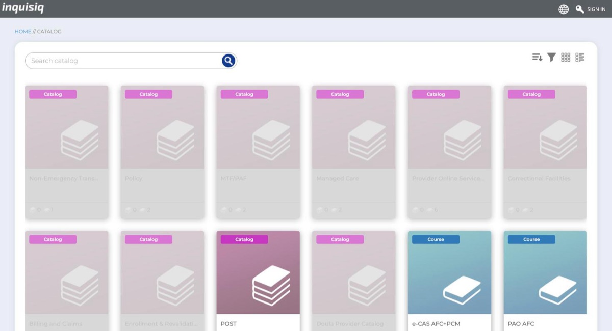
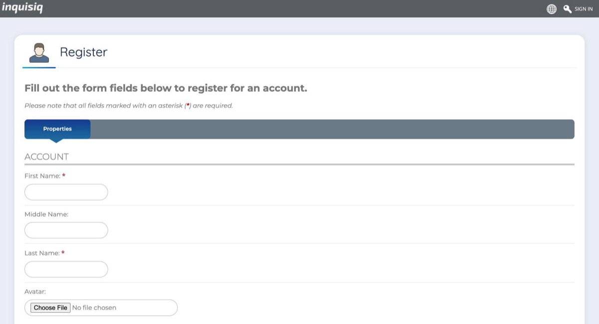
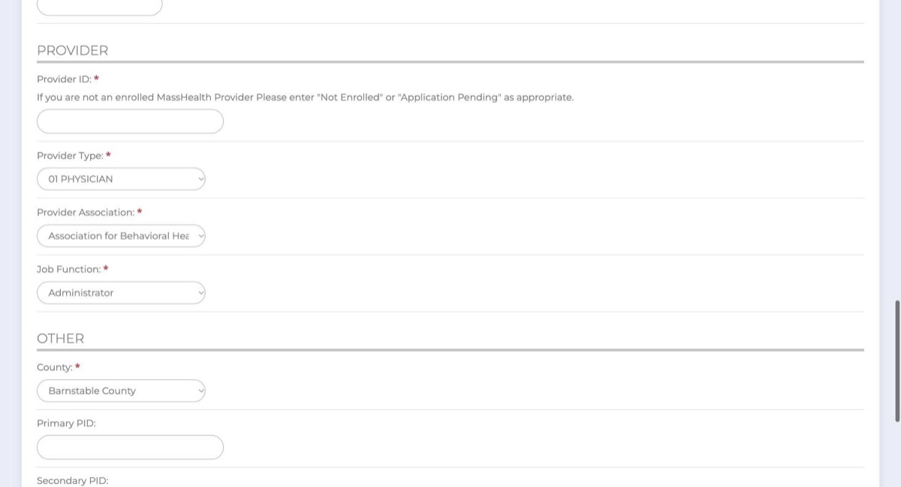

Doula guide › Step 2
Getting through the MassHealth doula training
The free online training is required before you can apply. The website it's on is run for MassHealth by its contractor, Maximus, and it doesn't look like a state site. It is the right place. This page walks you through it, click by click.

Your email address, mailing address, phone number and the county you live or work in. Pick a username and password you'll remember, since you'll need to sign back in to download your certificate.
Create your account
-
Go to the MassHealth provider training sign-up page. Fields with a red asterisk (*) are required.

The sign-up page. It's titled "Register." -
Most fields are simple. These are the ones that confuse people:
- Username and password: write them down. You'll need them to get your certificate later.
- Local Timezone: choose (GMT-05:00) Eastern Time (US & Canada).
- Provider Name/Agency: your doula business name, or your own name if you don't have one.
- Provider ID: you don't have one yet. Type Application Pending.
- Provider Type: the list has over 80 options. Scroll down to C5 DOULA.
- Provider Association: there's no doula option. Choose Other unless you belong to one of the groups listed.
- Job Function: there's no doula option here either. Choose Other.
- County: the county where you live or work.

The "Provider" part of the form. Provider Type shows "01 PHYSICIAN" until you change it to C5 DOULA. -
The button is at the very bottom of the form. If the page shows an error, scroll up and look for a required field marked in red.
Find the course and enroll
-
If you see Sign in in the top right corner, click it and sign in with your new username and password. The doula course stays greyed out until you're signed in.
-
Click Catalog in the top menu. You'll see a wall of tiles for every kind of MassHealth provider. Click the tile named Doula Provider Catalog (in the picture at the top of this page, it's in the second row), then choose MassHealth Doula Provider Training.
-
Click the Enroll button at the top of the course page. A green Success box appears. Click the Click here link inside it to go to your course.
Take the training
-
On the Overview tab, press the green play button to start. The training is split into several video modules, and all of them must be finished to get credit. You can stop and come back later; just sign in again and return to the course.
-
The Resources tab has a PDF of the slides. It's useful for reference, but reading it does not count as completing the training. Only the videos do.
Get your certificate
-
Click My Dashboard at the top of the page. In the row of round Widgets icons, click the gold ribbon (the Certificates icon).
-
Next to MassHealth Doula Provider Training, click the red Save as PDF button. Save it somewhere you'll find it, and print a copy if you'll be mailing your application.
-
Your certificate goes in your MassHealth enrollment application.
Already went to one of MassHealth's live doula training sessions from start to finish? Then you've already met this requirement and don't need the certificate. Steps summarized from MassHealth's official training instructions as of October 2026; the training website may change.
Stuck on the training website?
Tell us which step isn't working. We read every message and use it to keep this walkthrough up to date.
For problems with your training account, MassHealth's Customer Service Center can help: (800) 841-2900.